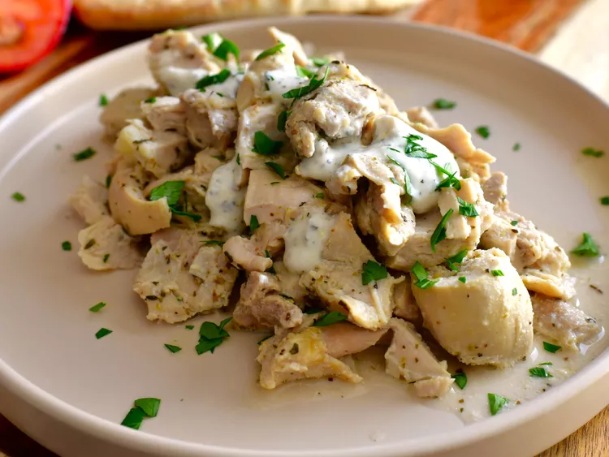

Yogurt Chicken
Home

This slow cooker Greek yogurt chicken is a saucy, super easy, super versatile slow cooker chicken recipe that's great served over rice, or stuffed into a pita.
Ingredients
- 2 pounds skinless, boneless chicken thighs
- 1 cup plain whole milk Greek yogurt
- 1 lemon, zested and juiced
- 1 tablespoon olive oil
- 1 teaspoon kosher salt, or to taste
- 1 teaspoon dried basil
- 1 teaspoon dried oregano
- 1 teaspoon garlic powder
- 1 teaspoon onion powder
- 1/2 teaspoon dried thyme
- 1/2 teaspoon freshly ground black pepper, or to taste
Steps
- Place chicken into a 6 quart slower cooker.
- Mix together yogurt, lemon zest, lemon juice, olive oil, salt, basil, oregano, garlic powder, onion powder, thyme, and black pepper until thoroughly combined.
- Add half of yogurt mixture to chicken, and toss to coat. Reserve and refrigerate remaining yogurt mixture to use later. Cover and cook on Low until chicken is tender, 4 to 5 hours.
- Remove chicken from slow cooker and roughly chop. If desired, remove half (or more) of cooking liquid from the slow cooker to make a thicker, less saucy final product. Otherwise, leave all the cooking liquid in for a lot of sauce that will be on the thinner side.
- Place chopped chicken back into the slow cooker. Add a 1/4 cup of reserved yogurt mixture, and stir to combine. Taste the sauce, and season with salt and pepper. Place the lid back on the slow cooker and allow chicken to warm through, about 10 minutes. Serve remaining yogurt mixture alongside chicken, if desired.